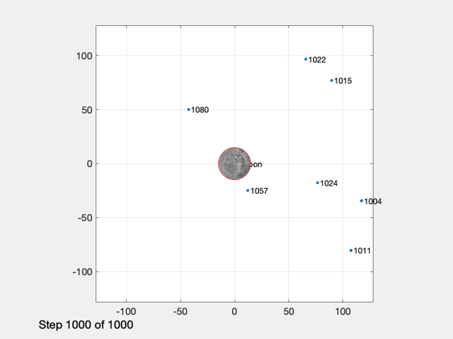
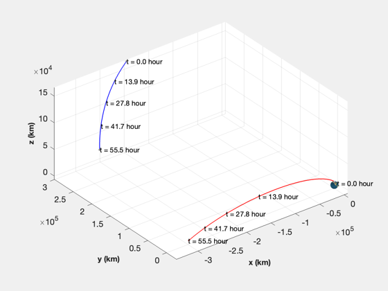
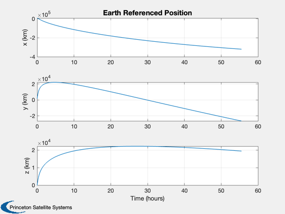
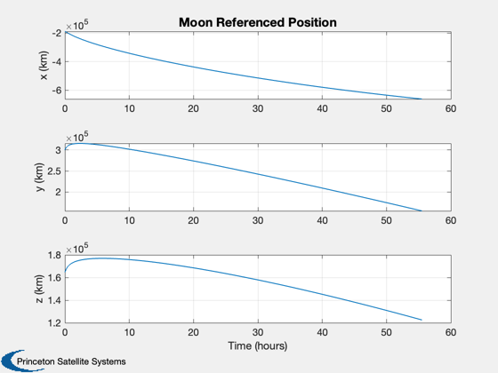
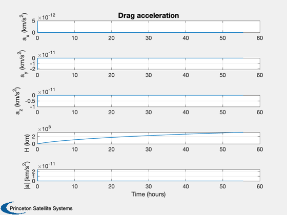
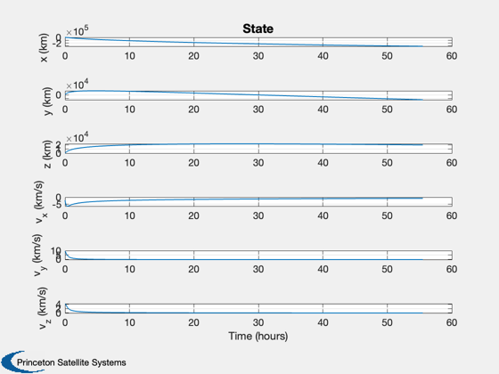
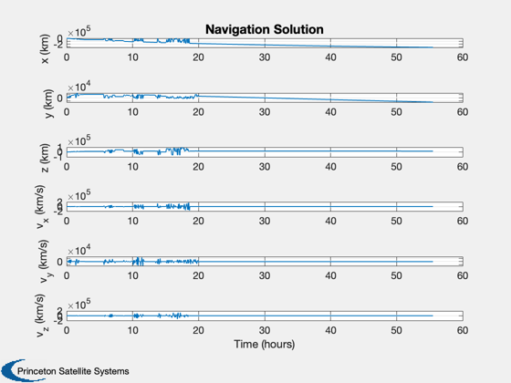
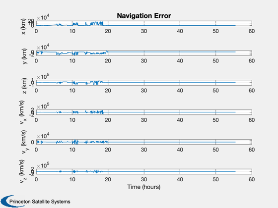
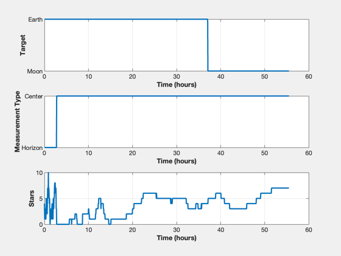
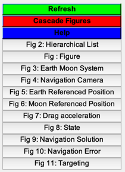

Simulate ONS for elements of a lunar mission
This only simulates the orbital motion. The right hand side can be referenced to either the Earth or the Moon. There are five built-in test cases:
'gps orbit' Reference is the Earth horizon from GPS altitude 'earth orbit' Reference is the Earth horizon from equatorial LEO 'cis-lunar to moon' Switches from Earth horizon, to Earth center to Moon Center 'reentry' Experiences high disturbance forces 'lunar orbit' Reference is the lunar horizon
See also RHSCisLunarMission, PlanetPosJPL, GPSSatellite, NavigationCamera, MeasGPS, MeasRangeGroundStation, MeasStarAngleAndChord, TimeDisplay, StarCameraViewer, OpticalNavigation, U2Q, EarthMoon, Plot2D, Figui
-----------------------------------------------------------------------
Contents
Copyright (c) 2021 Princeton Satellite Systems, Inc. All rights reserved.
%-------------------------------------------------------------------------- % Since version 2021.1 %--------------------------------------------------------------------------
Constants
rE = Constant('equatorial radius earth'); rM = Constant('equatorial radius moon'); secToDay = 1/86400; % Targets moon = 1; earth = 2; % Get the default data structure for the dynamical model dRHS = RHSCisLunarMission;
Script control
massFuel = 1000; % kg dRHS.mD = 1000; % kg dry mass viewersOn = true; % The star camera viewer printAll = false; % Print plots to pdf files % Names are 'reentry' 'earth orbit' 'cis-lunar to moon' 'lunar orbit' % 'gps orbit' simName = 'cis-lunar to moon'; % Initialize the moon ephemeris PlanetPosJPL( 'initialize', 10 ) % Initialize the state for different scenarios % If you add a scenario you must specify a target below switch simName case 'gps orbit' jD0 = Date2JD([2024 8 3 0 0 0]); dRHS.ref = earth; [r,v] = GPSSatellite(jD0); x = [r(:,1);v(:,1);massFuel]; dT = 10; el = RV2El(r(:,1),v(:,1)); p = Period(el(1)); p = 1000; tEnd = p; % sec case 'earth orbit' x0 = 6700; dRHS.ref = earth; x = [x0;0;0;0;sqrt(Constant('mu earth')/x0);0;massFuel]; dT = 10; tEnd = 8000; % sec jD0 = Date2JD([2024 8 3 0 0 0]); case 'cis-lunar to moon' r = [ 6.8293e+03; 1.5366e+03;4.2943]; v = [ -2.1189; 9.4409; 4.2943]; dRHS.ref = earth; x = [r;v;massFuel]; dT = 200; tEnd = 1000*dT; jD0 = Date2JD([2024 8 3 12 0]); % case 'reentry' dRHS.ref = earth; x = [6500;0;0;0;7.5;0;massFuel]; jD0 = Date2JD([2024 8 3 0 0 0]); dT = 0.5; tEnd = 600; % sec case 'lunar orbit' x0 = rM + 100; dRHS.ref = moon; x = [x0;0;0;0;sqrt(Constant('mu moon')/x0);0;massFuel]; jD0 = Date2JD([2024 8 3 0 0 0]); dT = 1; tEnd = 200; % sec otherwise error('%s is not a pre-defined simulation',simName); end % Set the Julian date for the dynamical model dRHS.jD0 = jD0; % Simulation steps n = ceil(tEnd/dT);
Setup data structures for the camera and measurements
dCam = NavigationCamera; dCam.camera.fScale = dCam.camera.fScale*2; dGPS = MeasGPS; dGS = MeasRangeGroundStation; dOM = MeasStarAngleAndChord;
Add noise
dCam.camera.sigmaXY = 1; dCam.camera.noise = true;
Set up the displays
TimeDisplay('initialize','ONS Simulation',n); if( viewersOn ) hNav = StarCameraViewer('initialize','Navigation Camera',n); %#ok<*UNRCH> end % The time vector t = (0:n-1)*dT;
Setup Optical Navigation
dONS = OpticalNavigation; dONS.ukf.fData = RHSUKFCisLunarMission; dONS.ukf.fData.jD0 = dRHS.jD0; r = x(1:3); v = x(4:6); % Set the target switch simName case 'gps orbit' dONS.target = earth; dONS.ukf.fData.ref = earth; case 'earth orbit' dONS.target = earth; dONS.ukf.fData.ref = earth; case 'reentry' dONS.target = earth; dONS.ukf.fData.ref = earth; case 'cis-lunar to moon' dONS.target = earth; dONS.ukf.fData.ref = earth; case 'lunar orbit' dONS.target = moon; dONS.ukf.fData.ref = moon; otherwise error('%s does not have a specified target',simName); end % Initialize ONS OpticalNavigation( 'initialize', dONS, r, v, dT ); meas.optical = NavigationCamera( r, dCam ); dONS.t = t(1); dONS.useUKF = false; % Otherwise it will use a static solution dONS.ref = dRHS.ref; % These are for the UKF only dONS.ukf.useOptical = false; dONS.ukf.useState = false; dONS.ukf.usePos = false; dONS.ukf.m = x(1:6); % Plotting arrays xP = zeros(25,n); target = zeros(1,n); type = zeros(1,n); nStars = zeros(1,n);
Run the simulation
for k = 1:n % Time update TimeDisplay('update',k); % Determine if the spacecraft has hit the ground if( dRHS.ref == moon ) h = Mag(x(1:3))-rM; else h = Mag(x(1:3))-rE; end % Get data for plotting [~,~,~,drag,acc] = RHSCisLunarMission(x,t(k),dRHS); [rMoon,~,vMoon] = PlanetPosJPL( 'update', jD0 + t(k)*secToDay ); if( dRHS.ref == moon ) dCam.xPlanet = [[0;0;0] -rMoon]; rMoon = [0;0;0]; vMoon = [0;0;0]; else dCam.xPlanet = [rMoon [0;0;0]]; end % Stop on landing if( h <= 0 ) break; end % Find the camera position in the ECI frame if( dRHS.ref == earth ) rCam = x(1:3); vCam = x(4:6); else rCam = dCam.xPlanet(:,1) - x(1:3); vCam = vMoon - x(4:6); end % Needed to point the camera dONS = OpticalNavigation( 'get unit vector', dONS, rMoon, vMoon, rCam, vCam ); % Get the camera output for use with optical measurements dCam.q = U2Q(dONS.uC,[0;0;1]); dOM.cam = NavigationCamera( rCam, dCam ); dOM.type = dONS.type; dOM.target = dONS.target; dOM.ref = dRHS.ref; dOM.uCamera = dONS.uCamera; dOM.aBody1 = dONS.aBody1; dOM.aBody2 = dONS.aBody2; dOM.r1 = rMoon; dOM.v1 = vMoon; % Get measurements meas.jD0 = jD0 + t(k)*secToDay; meas.state = x(1:6); meas.acc = acc; % Non-gravitational spacecraft acceleration meas.optical = MeasStarAngleAndChord( [rCam;vCam], dOM ); meas.gps = MeasGPS( x, dGPS ); meas.gs = MeasRangeGroundStation( x, dGS ); % ONS dONS.cam = dOM.cam; dONS.ref = dRHS.ref; dONS.r1 = dOM.r1; dONS.v1 = dOM.v1; dONS.t = t(k); dONS = OpticalNavigation( 'update', dONS, meas, rMoon, vMoon, rCam, vCam ); target(k) = dONS.target; type(k) = dONS.type; nStars(k) = dONS.ukf.optical.nStars; % Display the camera view if( viewersOn ) StarCameraViewer('update', dOM.cam, [], hNav, dCam, k); end % Store for plots xP(:,k) = [x;rMoon;dRHS.thrust;dRHS.ref;drag;h;Mag(drag);dONS.x]; % Propagate the state x = RK4(@RHSCisLunarMission,x,dT,t(k),dRHS); end TimeDisplay('close');
Plotting
% Shorten the vectors if it hits the ground j = 1:k; xP = xP(:,j); t = t(j); target = target(j); type = type(j); nStars = nStars(j); % Make earth and moon reference position rEarth = zeros(3,k); rMoon = zeros(3,k); j = find(xP(14,:) == moon ); rMoon(:,j) = xP(1:3,j); rEarth(:,j) = xP(8:10,j) - rMoon(:,j); j = find(xP(14,:) == earth ); rEarth(:,j) = xP(1:3,j); rMoon(:,j) = xP(8:10,j) + rEarth(:,j); % Earth/Moon plot EarthMoon( xP(1:3,:), jD0 + t/86400, [1 1], xP(8:10,:) ); % Plot [t,tL] = TimeLabl(t); yL = {'x (km)' 'y (km)' 'z (km)'}; yD = {'a_x (km/s^2)' 'a_y (km/s^2)' 'a_z (km/s^2)' 'H (km)' '|a| (km/s^2)'}; Plot2D(t,rEarth,tL,yL,'Earth Referenced Position'); Plot2D(t,rMoon, tL,yL,'Moon Referenced Position'); Plot2D(t,xP(15:19,:),tL,yD,'Drag acceleration'); yS = {'x (km)' 'y (km)' 'z (km)' 'v_x (km/s)' 'v_y (km/s)' 'v_z (km/s)'}; Plot2D(t,xP(1:6,:),tL,yS,'State'); Plot2D(t,xP(20:25,:),tL,yS,'Navigation Solution'); Plot2D(t,xP(20:25,:) - xP(1:6,:),tL,yS,'Navigation Error'); NewFig('Targeting') subplot(3,1,1); h = plot(t,target); set(h,'linewidth',2); grid on XLabelS(tL); YLabelS('Target') set(gca,'ytick',[1 2],'yticklabel',{'Moon' 'Earth'}); subplot(3,1,2); h = plot(t,type); set(h,'linewidth',2); grid on XLabelS(tL); YLabelS('Measurement Type') set(gca,'ytick',[1 2],'yticklabel',{'Horizon' 'Center'}); subplot(3,1,3); h = plot(t,nStars); set(h,'linewidth',2); grid on XLabelS(tL); YLabelS('Stars') Figui if( printAll ) n = get(gcf,'number'); for k = 1:n PrintFig(1,4,k,sprintf('%s%d',simName,k)); end end %-------------------------------------- % $Id: 3c99b3853792325353e9a8771b4664e8f1bfe3a4 $        